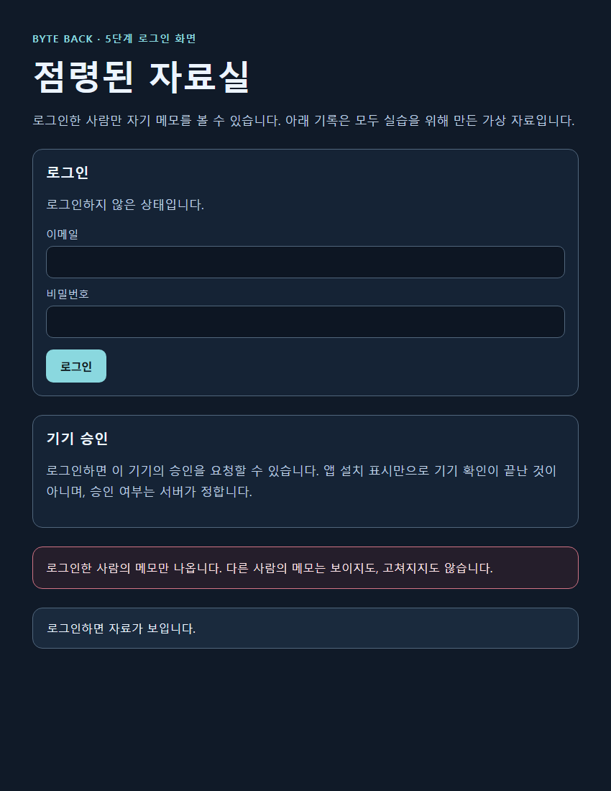

로그 분석·자동화
Python
서버 로그 수집·정규화, 이상탐지 규칙 구현 및 개선
자기소개
SKT ALEPH 캡스톤 프로젝트에서는 Python을 활용해 로그 분석 기반 이상탐지 기능을 구현했습니다. 중복 탐지의 원인을 찾아 규칙을 개선하고, 팀의 대응 기능과 연계한 차단 결과를 검증했습니다.
영상 편집을 독학해 프리랜서로 활동하며, 고객의 요구를 파악하고 결과물의 완성도를 높여 왔습니다. 필요한 기능을 스스로 익혀 적용하고, 작업 방식을 개선해 편집 시간을 단축했습니다.
SKILLS
로그 분석·자동화
서버 로그 수집·정규화, 이상탐지 규칙 구현 및 개선
서버·가상환경
탐지 프로그램 배포·실행, 팀 대응 기능과의 연계 검증
원격 접속
SSH(PuTTY)·Tailscale을 캡스톤 프로젝트의 원격 접속 도구로 활용
EXPERIENCE
제로트러스트 기반 네트워크·보안 인프라 기초를 학습했습니다. 캡스톤 프로젝트에서는 Python 기반 로그 분석·이상탐지 자동화 기능을 구현하고, VM 서버 배포와 팀 대응 기능과의 연계 검증을 담당했습니다.
인증서 보기영상 편집을 독학해 프리랜서로 활동하며, 클라이언트의 요구를 결과물에 반영하고 필요한 기능을 스스로 학습해 실무에 적용했습니다. 채널 동향을 분석해 편집 방식을 개선하고, 조회수 향상으로 이어지는 성과를 만들었습니다.
코로나19 유행 시기, 하루 약 500~700명이 방문하는 보건소에서 입구 안내를 담당했습니다. 방문 목적을 확인하고 필요한 정보를 안내했으며, 일부 기간에는 해당 업무를 단독으로 수행했습니다.
PROJECTS
직접 구현한 기능과
검증 과정을 소개합니다.
로그 기반 이상행위 탐지·대응 자동화
Python으로 로그 수집·정규화와 이상탐지를 자동화하고,
VM 배포와 대응 연계 검증을 담당했습니다.
Python · Linux · VMware · pfSense 연동
서버 로그를 수집하고 공통 형식으로 정리
행위별 규칙과 위험 점수로 보안 이벤트 판별
탐지 프로그램을 배포하고 팀 대응 기능과 연계 확인
4가지 이상행위 시나리오를 다룬 프로젝트

웹 접근통제부터
PC 보안 상태 진단까지
인증·기기·구역별 접근통제, 교육용 경보 판정, PC 상태 진단을 단계별로 검증했습니다. AI 코딩 도구를 활용하며 실패 원인 검토와 수정 방향 판단, 배포·문서화를 진행했습니다.
남아 있던 공개 데이터 경로를 찾아 수정하고, 교육 평가 45 → 90 → 100점을 확인했습니다.
JavaScript · Supabase · Vercel · Windows
EDUCATION
AI 보안 에이전트 개발 과정 인증
Class Top · 케테르 최고 등급
전국 수강생 132명 중 14위 · 출석률 100%
CONTACT